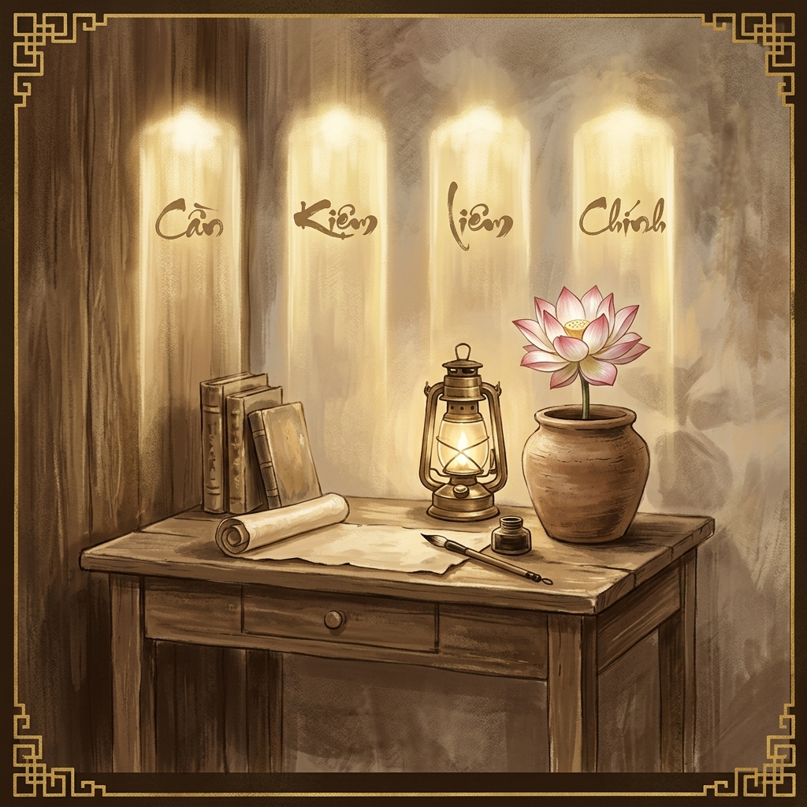

Cần - Kiệm - Liêm - Chính: Nền tảng đạo đức cách mạng theo tư tưởng Bác Hồ

"Cũng như sông thì có nguồn mới có nước, không có nguồn thì sông cạn. Cây phải có gốc, không có gốc thì cây héo. Người cách mạng phải có đạo đức, không có đạo đức thì dù tài giỏi mấy cũng không lãnh đạo được nhân dân." — Hồ Chí Minh, Sửa đổi lối làm việc, 1947
Trong tư tưởng của Hồ Chí Minh, đạo đức là gốc của người cách mạng. Người đã dành cả cuộc đời để nêu gương và không ngừng giáo dục, bồi dưỡng đạo đức cho cán bộ, đảng viên và nhân dân. Bộ tứ phẩm chất Cần - Kiệm - Liêm - Chính là tiêu chuẩn đạo đức cốt lõi mà Người đề ra và thân mình thực hành trọn đời.
Siêng năng, chăm chỉ, cần cù trong công việc. Không lười biếng, không ỷ lại. Bác Hồ nói: "Cần tức là siêng năng, chăm chỉ, cố gắng dẻo dai."
Tiết kiệm sức người, sức của, tiền bạc, thì giờ. Không xa xỉ, lãng phí. "Kiệm là tiết kiệm, không xa xỉ, không hoang phí, không bừa bãi."
Trong sạch, không tham lam. Luôn tôn trọng và giữ gìn của công, của dân. "Liêm là trong sạch, không tham lam." Đây là phẩm chất đặc biệt quan trọng với người cán bộ có chức quyền.
Thẳng thắn, đứng đắn, ngay thẳng. Không tà, không vẹ. "Chính nghĩa là không tà, thẳng thắn, đứng đắn." Dám nói thật, dám làm đúng dù khó khăn.
Ý nghĩa với sinh viên trong cuộc sống hiện đại
Bốn phẩm chất này không chỉ dành cho cán bộ, đảng viên mà là tiêu chuẩn đạo đức phổ quát cho mọi người Việt Nam. Với sinh viên ngày nay:
- Cần: Học tập chăm chỉ, không lười biếng, không gian lận trong thi cử
- Kiệm: Biết tiết kiệm thời gian, tiền bạc, tránh lãng phí trong học tập và cuộc sống
- Liêm: Trung thực, không gian lận, không sử dụng tài nguyên chung sai mục đích
- Chính: Dám nói thật, bảo vệ lẽ phải, không a dua, không xu nịnh
Tài liệu tham khảo: Hồ Chí Minh, "Đường Kách Mệnh" (1927); "Sửa đổi lối làm việc" (1947); Giáo trình Tư tưởng Hồ Chí Minh (Bộ GD&ĐT, 2021), Chương 7.
open_in_new Xem chi tiết